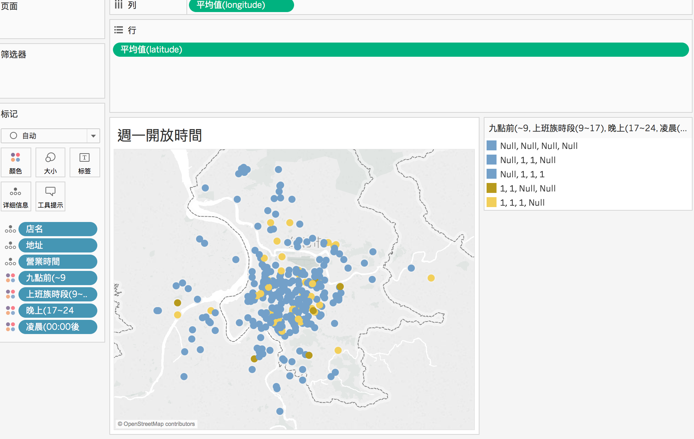
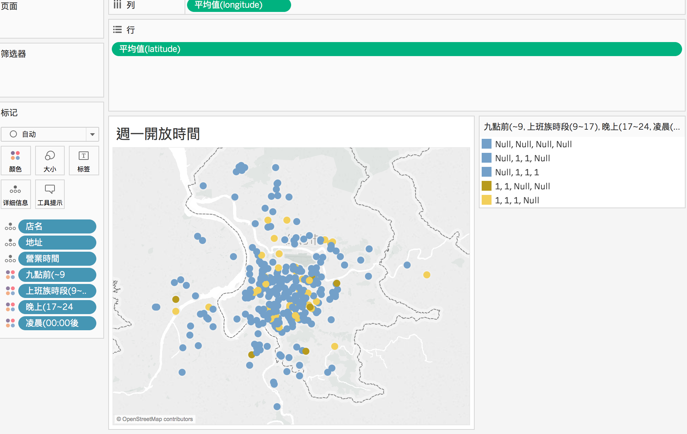

 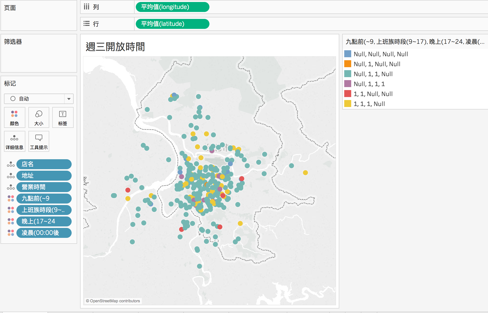
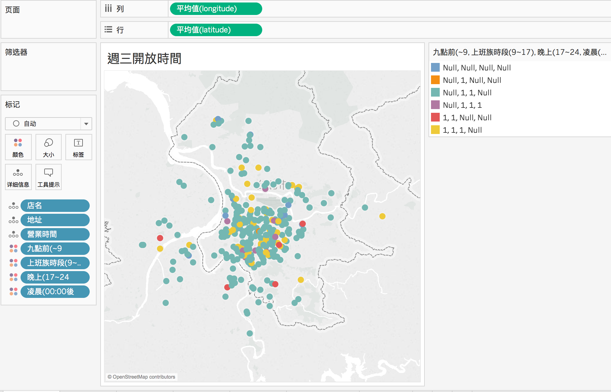
 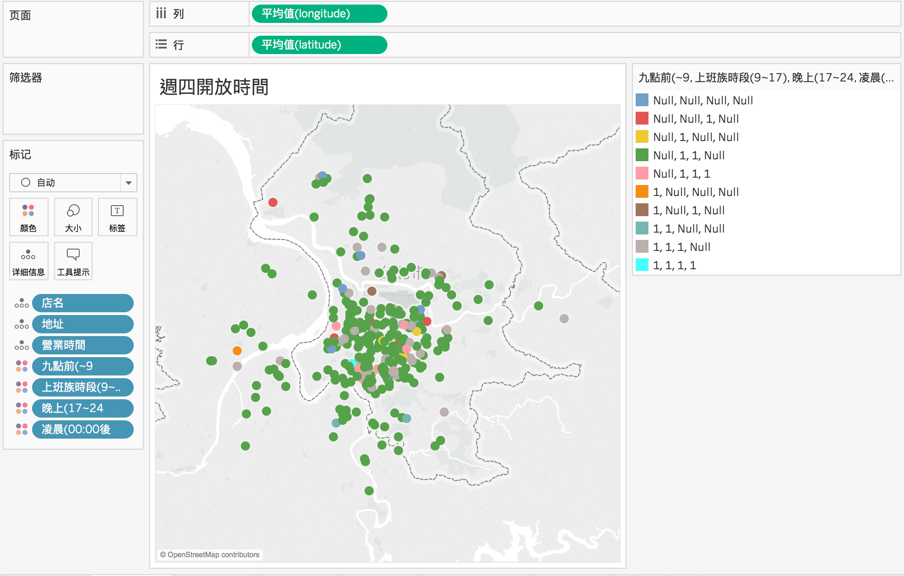
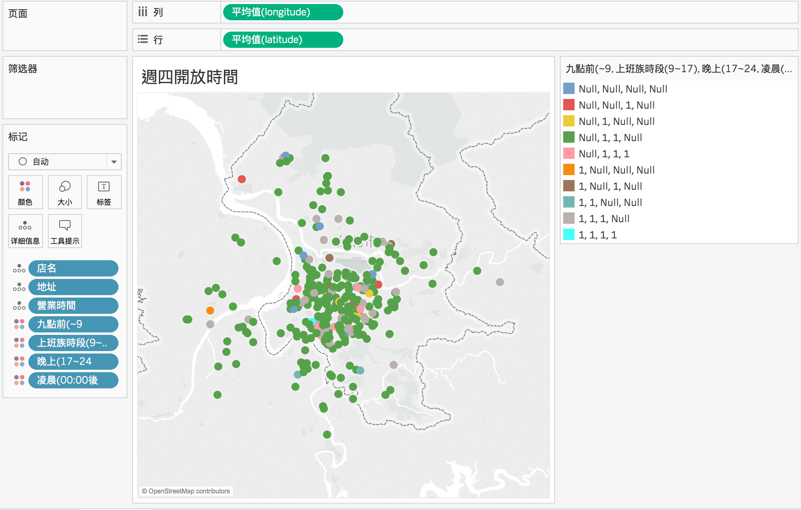
 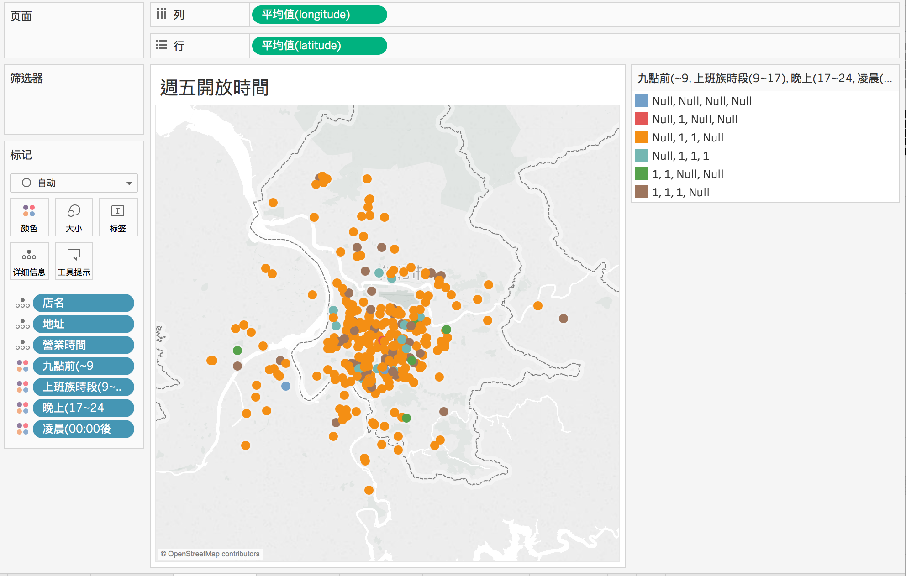
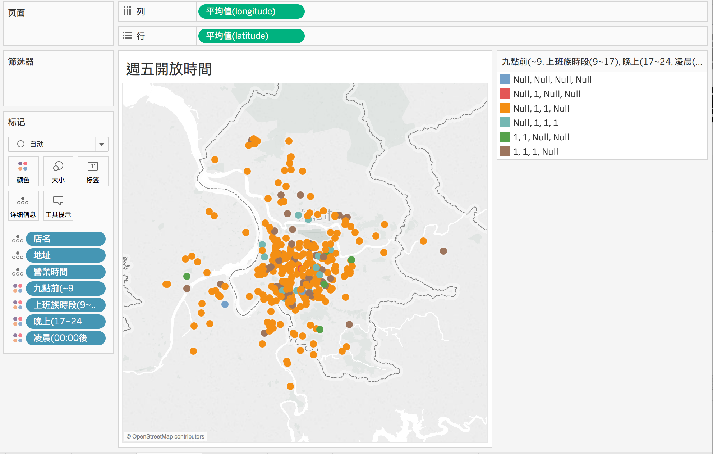
 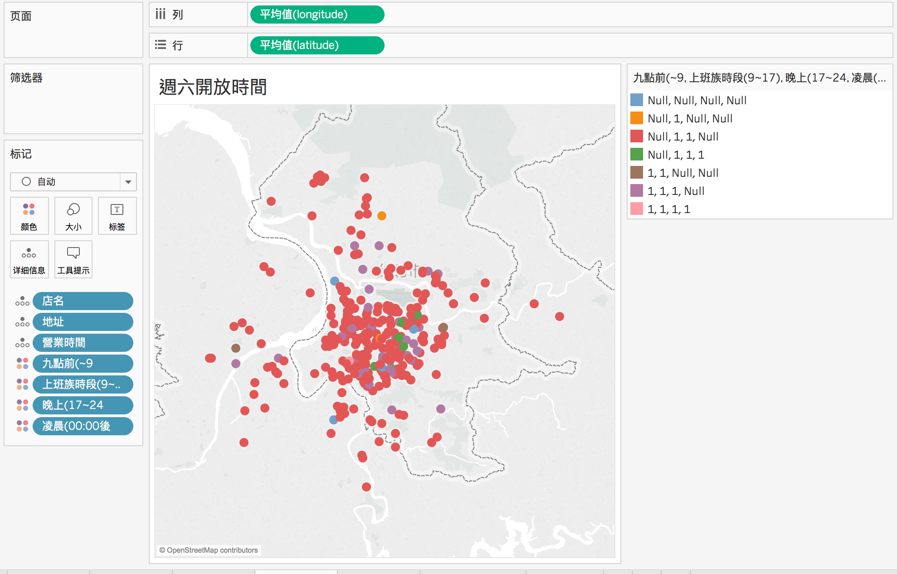
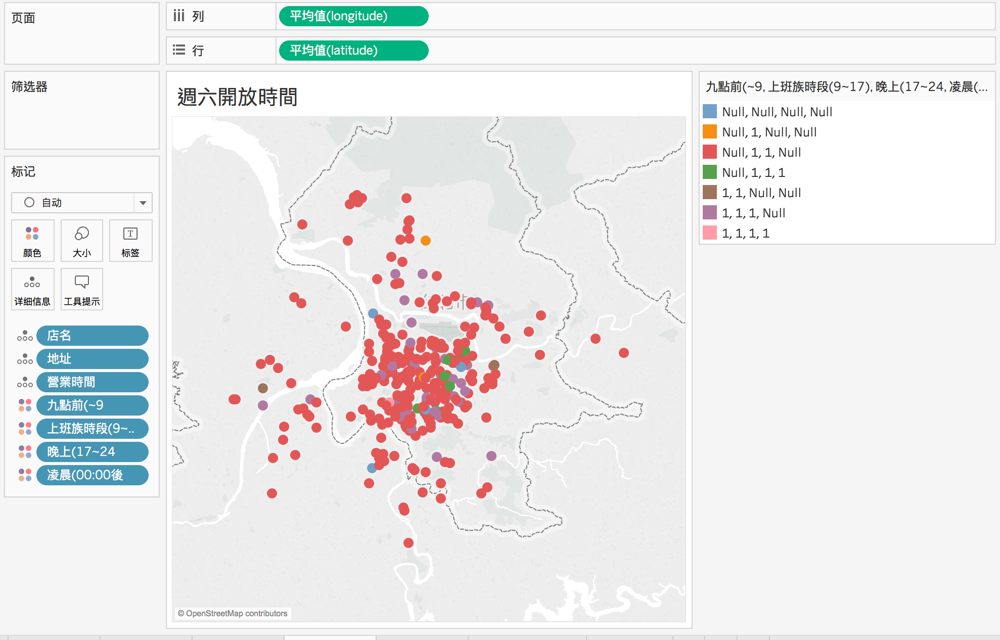
 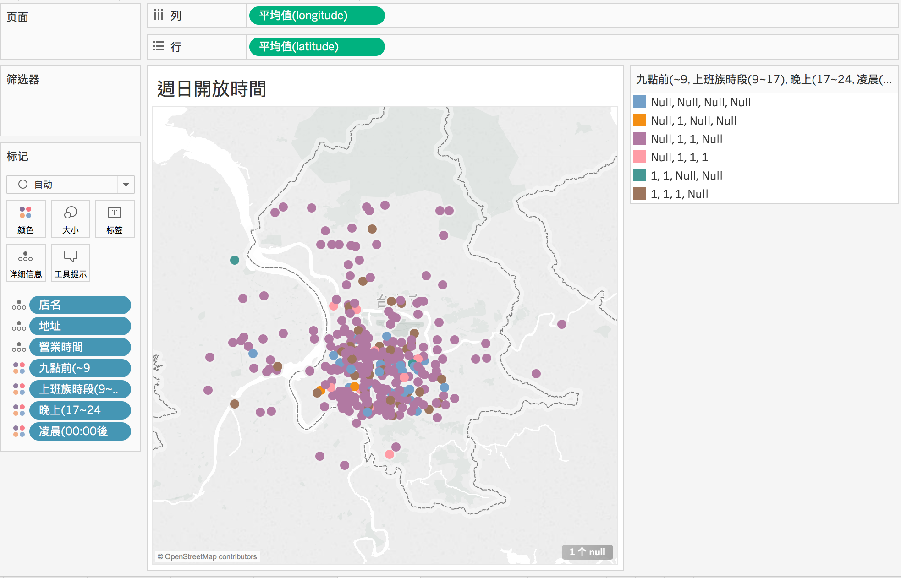
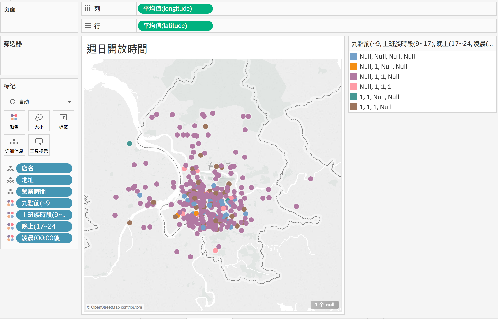
深夜咖撐：夜貓指數
就是喜歡半夜到這些店晃蕩。
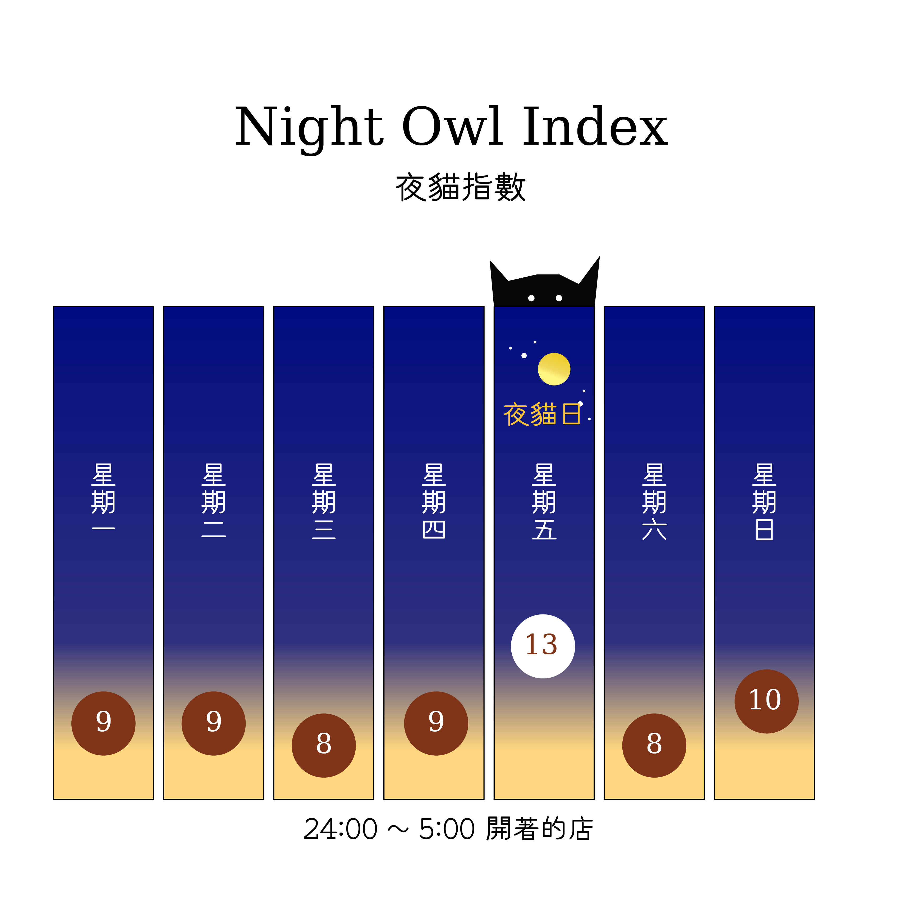
夜貓子都去哪些店？
| 店名 | 地址 | 營業時間 | 作者點評 |
|---|---|---|---|
| 杜鵑窩 CUCKOO's NEST | 台北市中山區北安路458巷41弄52號 | 13:30-00:30 | 這時間點也能算夜貓店？ |
| 未央咖啡店 | 台北市大安區四維路208巷10號 | 12:30~01:00 | 沒去過，但名字頗吸引人的 |
| 穆勒咖啡館 Cafe Muller | 台北市中山區北安路595巷33號 | 週日~四 11:30-23:00 週五六 11:30-01:00 | 蠻多藝文活動的樣子 |
| COSTUMICE CAFÉ | 台北市大安區忠孝東路四段223巷71弄6號 | 週一~週四、日 12:00-24:00；週五六 12:00-01:00 | 沒去過，但開不夠晚 |
| 紅雪啡啡 | 台北市松山區南京東路五段167號 | 09:00-01:00 | 沒去過，不過我覺得沒到兩點都不算半夜 |
| Modern Mode Café | 台北市大同區迪化街一段278號 | 週一~週四、日 11:30-20:30 週五、六 11:30-02:01 週二公休 | 沒去過 |
| Remember Me_記得我．Café | 台北市松山區南京東路四段133巷4弄16號 | 週二~六 12:00-02:00 週日~一 12:00-22:30 | 朋友駐唱的店，東西很好吃，沒待到半夜過 |
| 巴黎米咖啡 Cafe 8mm | 台北市大安區新生南路三段60巷1號 | 週一到週五 13:30-01:30 週六日 12:00-01:30 週三公休 | 巧克力極好喝的店，氣氛也很讚，但沒待到半夜過 |
| 左先生咖啡Dousun Cafe' | 台北市松山區延壽街139號 | 14:30-03:00 週二三公休 | 沒去過，但很想去去看 |
| Sugar Man Cafe | 台北市大安區和平東路一段87-1號 | 14:00-04:00 | 愛店之一，飲料好喝、老搖滾也很棒 |
| 暗角咖啡 | 台北市中正區廈門街1號 | 14:00-04:00 | 搬家前常去，搬家後氣氛變了，不過是這時間點少數還開的店。 |
| 4am cafe | 台北市大安區光復南路308巷38號 | 14:00-04:00 | 傳說中的咖啡店，一直沒去 |
| 生活在他方elsewhere cafe | 台北市中正區羅斯福路一段119巷3號1樓 | 03:30-22:00 週一公休 | 之前辦插畫展很棒，不知道這麼早開，很酷。 |
早起被鳥吃？
晨型人的最愛
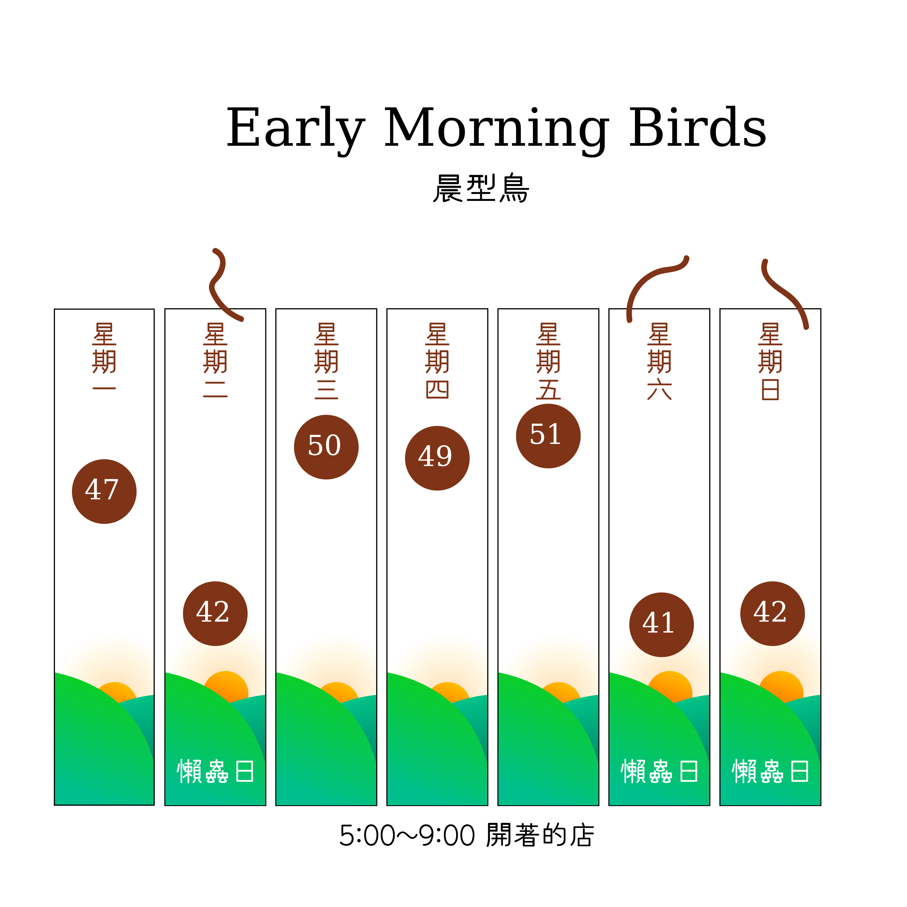